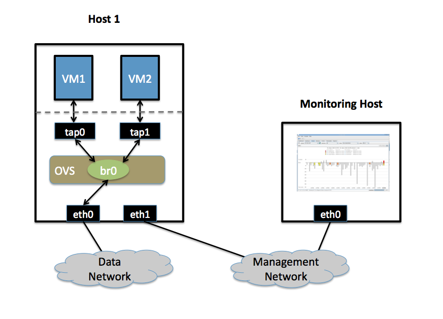

Monitoring VM Trafic Using sFlow¶
This document describes how to use Open vSwitch is to monitor traffic sent between two VMs on the same host using an sFlow collector. VLANs.
Setup¶
This guide assumes the environment is configured as described below.
Two Physical Networks¶
Data Network
Ethernet network for VM data traffic. For experimentation, this physical network is optional. You can instead connect all VMs to a bridge that is not connected to a physical interface.
Management Network
This network must exist, as it is used to send sFlow data from the agent to the remote collector.
Two Physical Hosts¶
The environment assumes the use of two hosts: host1 and hostMon. host is a hypervisor that run Open vSwitch and has two NICs:
- eth0 is connected to the Data Network. No IP address can be assigned on eth0 because it is part of an OVS bridge.
- eth1 is connected to the Management Network. eth1 has an IP address for management traffic, including sFlow.
hostMon can be any computer that can run the sFlow collector. For this cookbook entry, we use sFlowTrend, a free sFlow collector that is a simple cross-platform Java download. Other sFlow collectors should work equally well. hostMon has a single NIC, eth0, that is connected to the Management Network. eth0 has an IP adress that can reach eth1 on host1.
Two Virtual Machines¶
This guide uses two virtual machines - vm1 and vm2- running on host1.
Note
For Xen/XenServer, VM interfaces appears as Linux devices with names like vif1.0. Other Linux systems may present these interfaces as vnet0, vnet1, etc.
Configuration Steps¶
On host1, define the following configuration values in your shell environment:
COLLECTOR_IP=10.0.0.1
COLLECTOR_PORT=6343
AGENT_IP=eth1
HEADER_BYTES=128
SAMPLING_N=64
POLLING_SECS=10
Port 6343 (COLLECTOR_PORT) is the default port number for sFlowTrend. If you are using an sFlow collector other than sFlowTrend, set this value to the appropriate port for your particular collector. Set your own IP address for the collector in the place of 10.0.0.1 (COLLECTOR_IP). Setting the AGENT_IP value to eth1 indicates that the sFlow agent should send traffic from eth1‘s IP address. The other values indicate settings regarding the frequency and type of packet sampling that sFlow should perform.
Still on host1, run the following command to create an sFlow configuration and attach it to bridge br0:
$ ovs-vsctl -- --id=@sflow create sflow agent=${AGENT_IP} \
target="${COLLECTOR_IP}:${COLLECTOR_PORT}" header=${HEADER_BYTES} \
sampling=${SAMPLING_N} polling=${POLLING_SECS} \
-- set bridge br0 sflow=@sflow
Make note of the UUID that is returned by this command; this value is necessary to remove the sFlow configuration.
On hostMon, go to the sFlowTrend and click “Install” in the upper right-hand corner. If you have Java installed, this will download and start the sFlowTrend application. Once sFlowTrend is running, the light in the lower right-hand corner of the sFlowTrend application should blink green to indicate that the collector is receiving traffic.
The sFlow configuration is now complete, and sFlowTrend on hostMon should be receiving sFlow data from OVS on host1.
To configure sFlow on additional bridges, just replace br0 in the above command with a different bridge name.
To remove sFlow configuration from a bridge (in this case, br0), run this command, where “sFlow UUID” is the UUID returned by the command used to set the sFlow configuration initially:
$ ovs-vsctl remove bridge br0 sflow <sFlow UUID>
To see all current sets of sFlow configuration parameters, run:
$ ovs-vsctl list sflow
Troubleshooting¶
If sFlow data isn’t being collected and displayed by sFlowTrend, check the following items:
Make sure the VMs are sending/receiving network traffic over bridge br0, preferably to multiple other hosts and using a variety of protocols.
To confirm that the agent is sending traffic, check that running the following command shows that the agent on the physical server is sending traffic to the collector IP address (change the port below to match the port your collector is using):
$ tcpdump -ni eth1 udp port 6343
If no traffic is being sent, there is a problem with the configuration of OVS. If traffic is being sent but nothing is visible in the sFlowTrend user interface, this may indicate a configuration problem with the collector.
Check to make sure the host running the collector (hostMon) does not have a firewall that would prevent UDP port 6343 from reaching the collector.
Credit¶
This document is heavily based on content from Neil McKee at InMon:
- https://mail.openvswitch.org/pipermail/ovs-dev/2010-July/165245.html
- http://blog.sflow.com/2010/01/open-vswitch.html (note: the configuration syntax is out of date, but the high-level descriptions are correct)